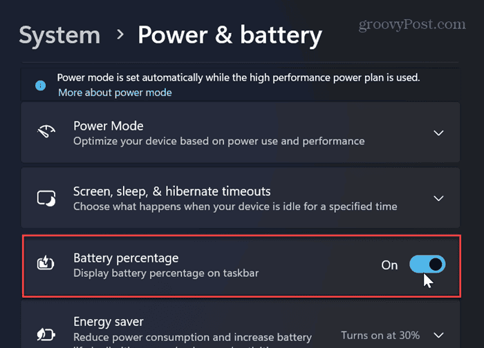
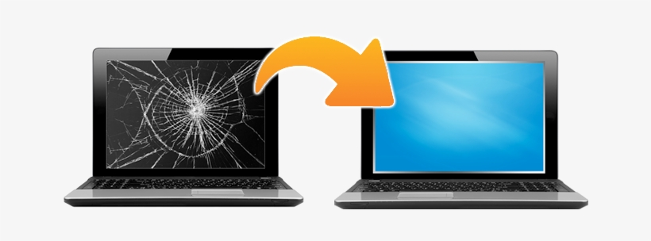
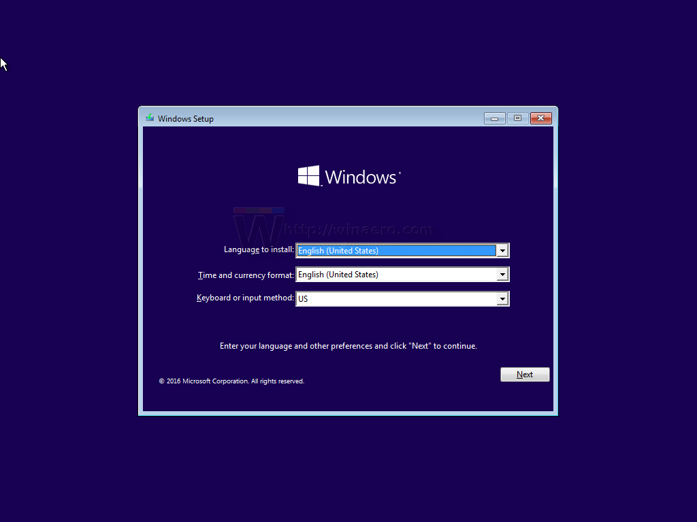

A slow laptop can be caused by malware, low storage, outdated software, or hardware issues. Regular servicing helps improve performance.
Read MoreOverheating, battery drain, keyboard issues, and display problems are common laptop issues that need professional attention.
Read More
Simple habits like adjusting brightness and closing background apps can significantly improve your laptop’s battery life.
Read More
Cracks, flickering display, or dead pixels are signs that your laptop screen needs replacement.
Read More
Proper OS installation ensures better performance, security, and compatibility with modern software.
Read More